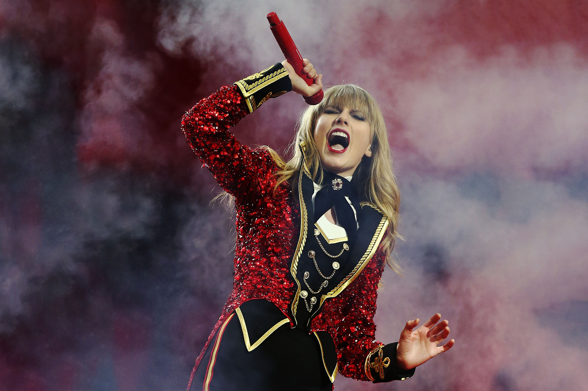

Red
Data de lançamento: 22 de outubro de 2012
Red é o quarto álbum de estúdio, lançado pela gravadora Big Machine Records no dia 22 de outubro
de 2012. O lançamento do disco foi anunciado
através de um webchat realizado por Swift no dia 13 de agosto do mesmo ano, no qual ela divulgou o
título, a capa e o primeiro single oficial do projeto, e ainda respondeu às perguntas dos fãs.

Durante o bate-papo, Swift liberou o primeiro single do álbum, "We Are Never Ever Getting Back
Together", que horas mais tarde foi disponibilizado para compra no formato digital através de
diversas lojas, como a iTunes Store e o Google Play. A canção saltou para a primeira posição da
Billboard Hot 100 em sua segunda semana com vendas digitais de mais de 623 mil cópias, sendo este o
primeiro tema de Swift a atingir o topo da tabela e tornando-a a cantora com o maior número de
vendas de um single em uma única semana, ultrapassando os recordes das cantoras Lady Gaga e Ke$ha, e
ficando apenas atrás do rapper Flo Rida. No mês seguinte, a cantora deu início a uma contagem
regressiva para o lançamento do álbum, no qual quatro faixas foram lançadas promocionalmente, uma a
cada semana, através do iTunes. "Begin Again" foi a primeira delas, e posteriormente se tornou no
segundo single oficial do disco. A faixa estreou na 7ª posição da Billboard Hot 100, e teve
vendas iniciais de 299 mil cópias. Das outras três faixas – "Red", "I Knew You Were Trouble" e
"State of Grace" – duas também figuraram entre as dez primeiras posições nos Estados Unidos, sendo
"State of Grace" a única que não ficou entre as dez mais, tendo chegado apenas até a 13ª posição da
parada.
Red foi bem recebido pelo público e pela crítica, obtendo índices de venda e de aprovação da crítica bastante positivos. Em seu primeiro dia de vendas, assumiu a liderança da iTunes Store de diversos países, inclusive a do Brasil. Vendeu mais de 500 mil unidades nas primeiras 24 horas nos Estados Unidos (sendo cerca de 160 mil apenas na Target Store), e fechou a semana de estreia com vendas de 1.218 milhões, fazendo de Swift a primeira mulher da história a ter dois álbuns vendendo mais de 1 milhão de cópias na semana de estreia desde o início da era da Nielsen Soundscan, em 1991, além de tê-la tornado a artista feminina com o segundo álbum mais vendido da história na semana de estreia nos Estados Unidos. O álbum também recebeu críticas bastante positivas, registrando uma média de 77 pontos de 100, calculada pelo agregador de resenhas Metacritic.